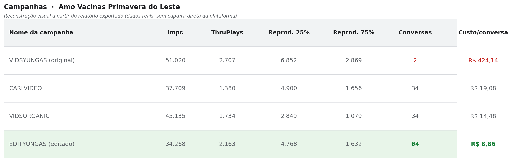

Tráfego pago que converte
Eu não rodo campanha só pra gerar clique. Eu configuro cada campanha pensando em qual ação realmente importa pro negócio, e ajusto o que for preciso até o número fazer sentido.
Performance Marketing | Tráfego Pago | Dados, Funil e Conversão
Especialista em performance marketing. Eu não adivinho o que funciona, eu descubro com dado e provo com número.
Como eu trabalho
Eu não rodo campanha só pra gerar clique. Eu configuro cada campanha pensando em qual ação realmente importa pro negócio, e ajusto o que for preciso até o número fazer sentido.
Quando um resultado não bate, eu não aceito o número como está. Eu investigo a causa raiz, formulo uma hipótese e testo até encontrar onde está o gargalo real.
Eu gosto de cruzar informação que parece solta e achar o padrão escondido nela. Às vezes o problema não está onde todo mundo está olhando.
Eu também entendo de estrutura de página e experiência do usuário, porque de nada adianta um anúncio bom levando pra um lugar que não converte.
O que os resultados me ensinaram
A conta chegou com uma campanha de busca direta, nicho e localidade, gastando mais de R$1.200 sem gerar uma única conversão registrada. Identifiquei que o problema não era só a segmentação: era o destino do clique. Reestruturei o funil por temperatura de intenção e criei uma rota de nutrição via grupo educativo. O resultado apareceu, mas percebi que a nova estrutura estava perdendo quase 11% das impressões por falta de orçamento. Ajustei o orçamento depois de confirmar que o funil convertia, e só então liberei escala.
Na prática: cada grupo de 5 pessoas que chegou até a clínica custou menos que uma única sessão de criolipólise.

A clínica (franquia de vacinação) já produzia vídeos institucionais com as enfermeiras e também tinha um mascote criado via IA, mas o resultado em Meta Ads não acompanhava o esforço. Ao comparar duas versões de um mesmo tema no Gerenciador de Anúncios, encontrei um padrão que contraria o senso comum: o vídeo que retinha mais audiência proporcionalmente (41,9% de conclusão) gerou apenas 2 conversas no WhatsApp, a R$424,14 cada. Reeditei o material aplicando interrupção de padrão nos primeiros segundos, sabendo que o público pago decide continuar assistindo em menos de 2 segundos, diferente do público orgânico. A nova versão reteve proporcionalmente menos (34,2%), mas converteu 32 vezes mais.
Retenção alta não significa público qualificado: o vídeo editado converteu 64 pessoas a R$8,86 cada, contra 2 pessoas a R$424,14 na versão original — 48 vezes mais barato por conversa.

Uma campanha de um tema sério e delicado precisava de leveza pra funcionar. Usei humanização de marca pra reduzir a resistência do público, e o resultado foi um custo por engajamento de um centavo. Esse case me ensinou que empatia também é estratégia, não é só sentimento.

Um vídeo prendia a atenção logo de cara, mas perdia o público rápido. Outro começava fraco, mas segurava até o final. Entender esse contraste me ensinou que atenção e qualificação de público não são a mesma coisa, e que às vezes o gancho certo não é o mais chamativo.

Ferramentas de trabalho
Quer conhecer melhor meu trabalho
Eu não estou aqui pra prometer milagre. Estou aqui pra mostrar que sei ler número, entender comportamento e transformar isso em resultado real. Se você quer alguém assim no seu time, dá uma olhada no meu trabalho.
Aberto a oportunidades em performance, mídia paga e growth.